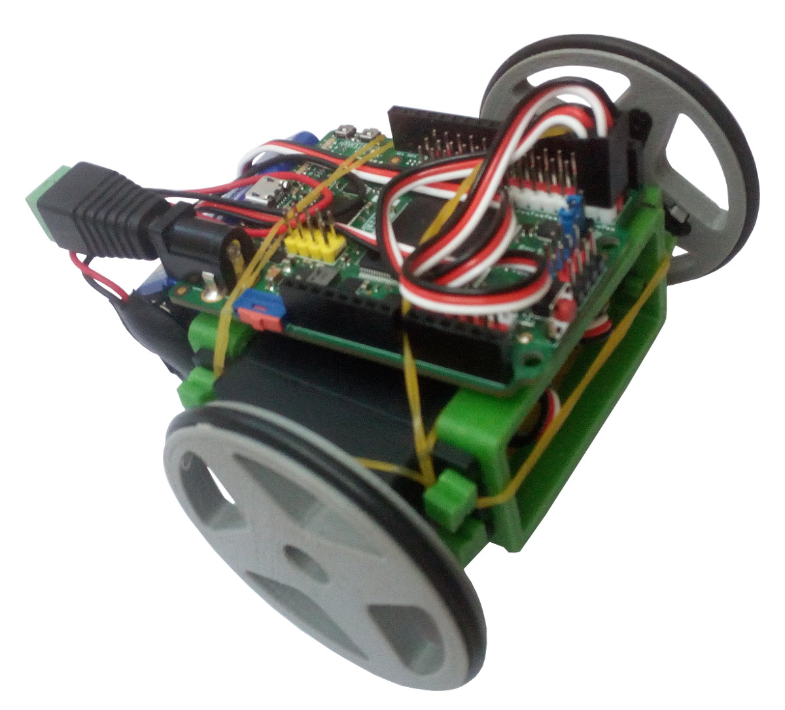
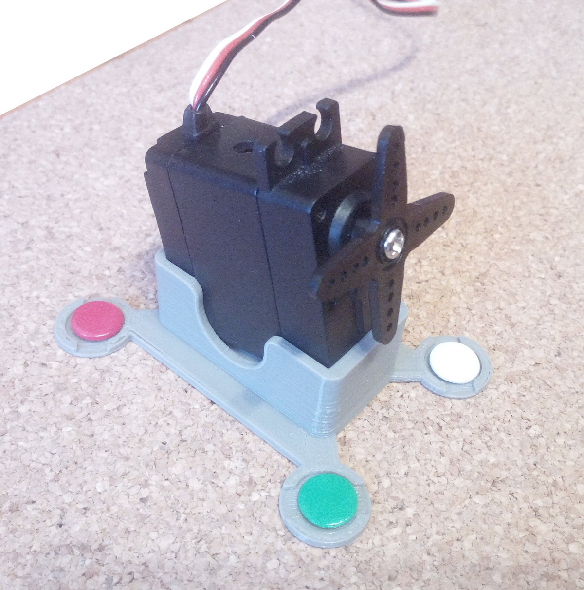
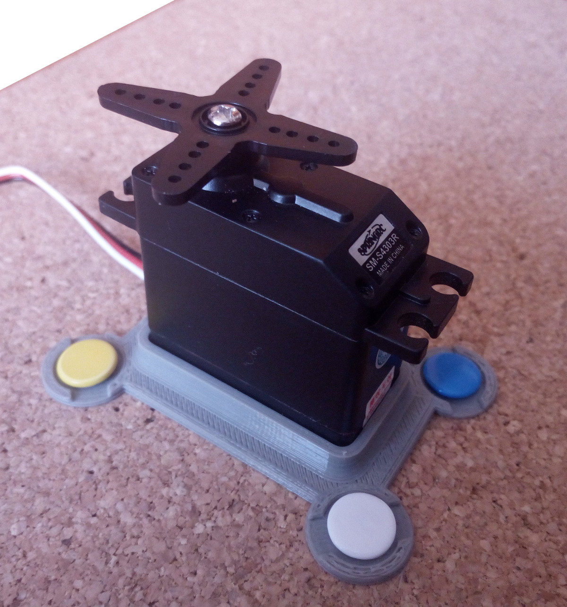
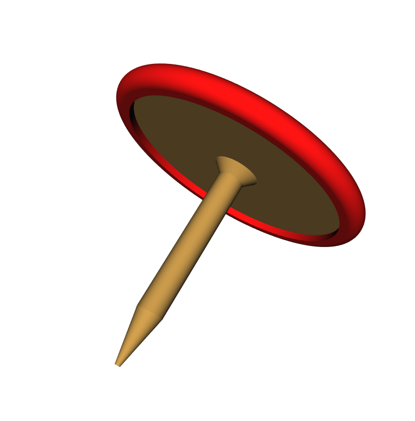
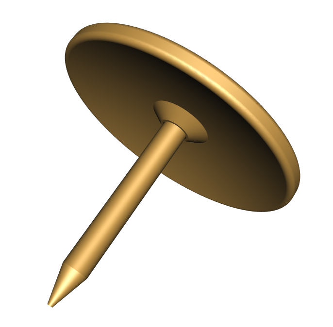
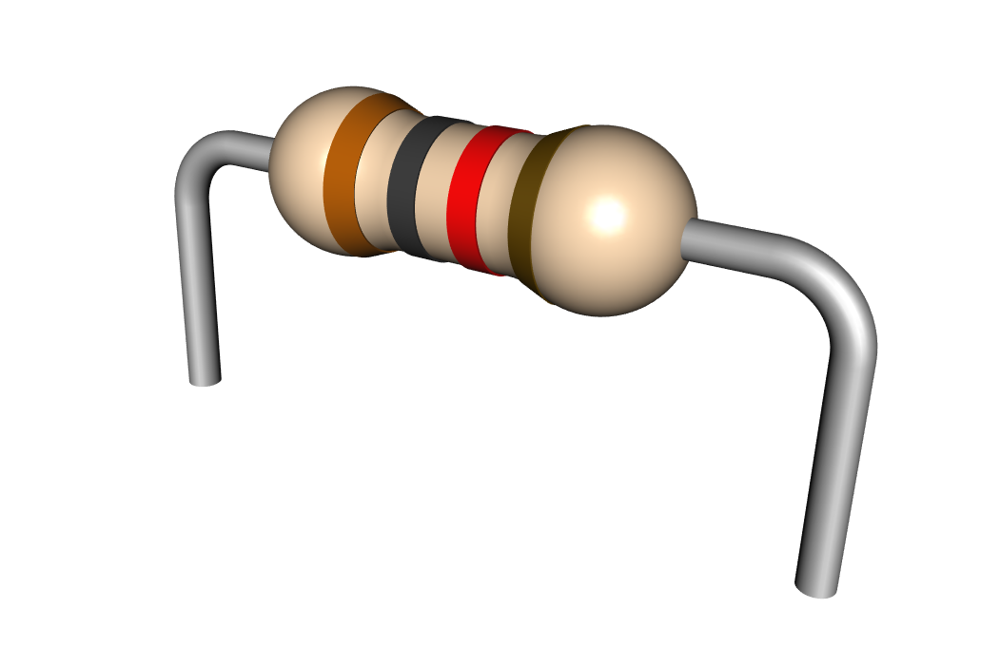

|
 03/Abril/2018 |
Publicada la versión 0.1 del Icebot, diseñado con FreeCAD 0.17
( Más información) ( Youmagine) |
|
 26/Marzo/2018 |
Soporte para servos de rotación continua SM-S4303R (Versión inclinada), diseñado con FreeCAD 0.17
( Más información) ( Youmagine) |
|
 26/Marzo/2018 |
Soporte para servos de rotación continua SM-S4303R, diseñado con FreeCAD 0.17
( Más información) (Youmagine) |
|
 10/Marzo/2018 |
Modelo de la Chincheta con cubierta de plástico migrado a FreeCAD 0.17 |
|
 1/Marzo/2018 |
Modelo de una Chincheta migrado a FreeCAD 0.17
( Más información) ( Wikicommons) |
|
 24/Febrero/2018 |
Resistencia pasante de 1/4w actualizada a FreeCAD 0.17
( Más información) ( Wikicommons) |